Escucharte
Tu comodidad y tus decisiones tienen espacio en cada consulta.
Nident nace como una propuesta de odontología cercana, con una mirada femenina y un espacio de cuidado para toda la familia.
Queremos que cada persona se sienta escuchada, respetada y acompañada. Sin presión: con tiempo para preguntar y elegir.
Ven a conocernos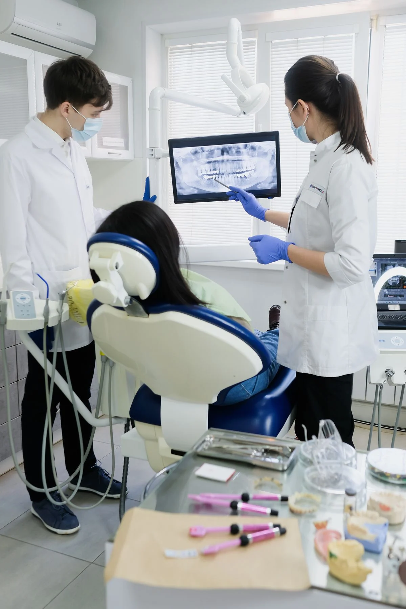
Personas que cuidan de personas.Tu comodidad y tus decisiones tienen espacio en cada consulta.
Explicaciones claras para que entiendas tu plan de cuidado.
Una atención sensible a cada edad y a cada experiencia.
Nombres y especialidades de ejemplo para visualizar la plantilla.
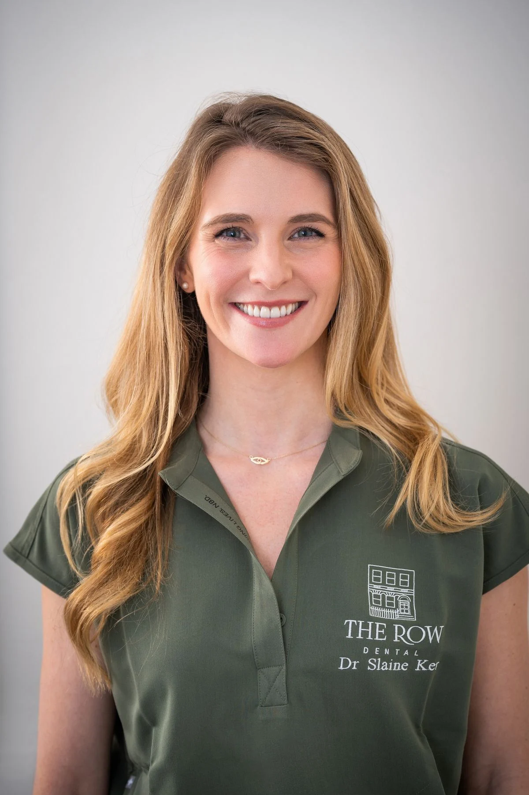
Odontología general
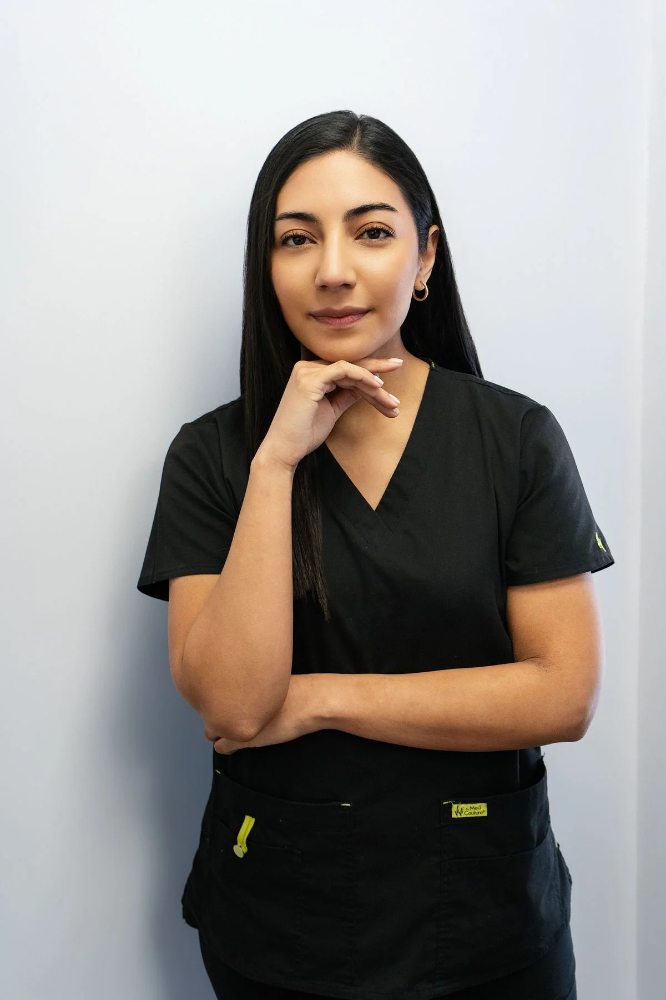
Odontopediatría
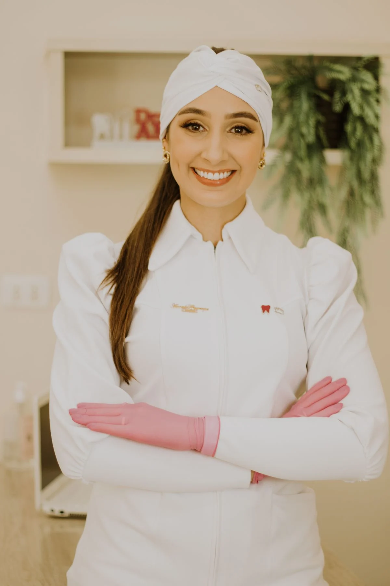
Ortodoncia
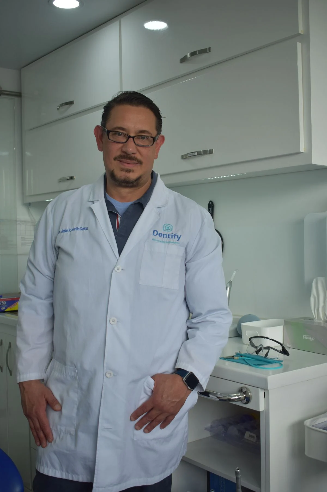
Rehabilitación oral
Queremos que sepas qué esperar. Así acompañamos tu recorrido por Nident.
Selecciona una de nuestras cuatro sedes y consulta la agenda de ejemplo. Puedes indicar el tratamiento que te interesa o empezar por una evaluación general.
Encuentra tu cita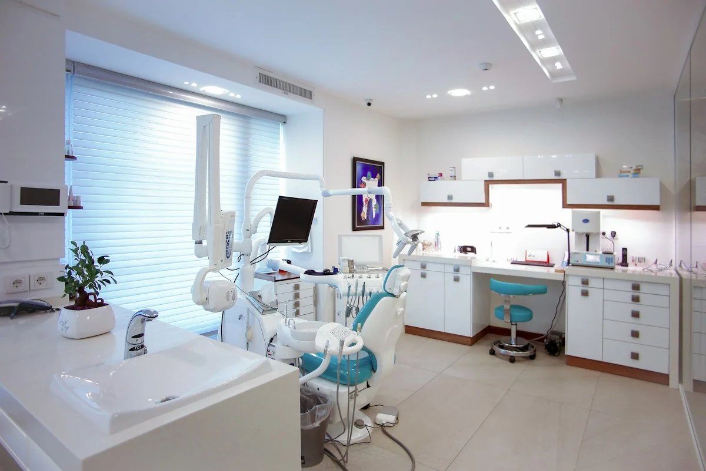
El encuentro empieza por tu motivo de consulta. La revisión ayuda a plantear los siguientes pasos; la propuesta debe explicar las opciones de atención, el presupuesto y cómo se organizarían las visitas.
Explora nuestra guía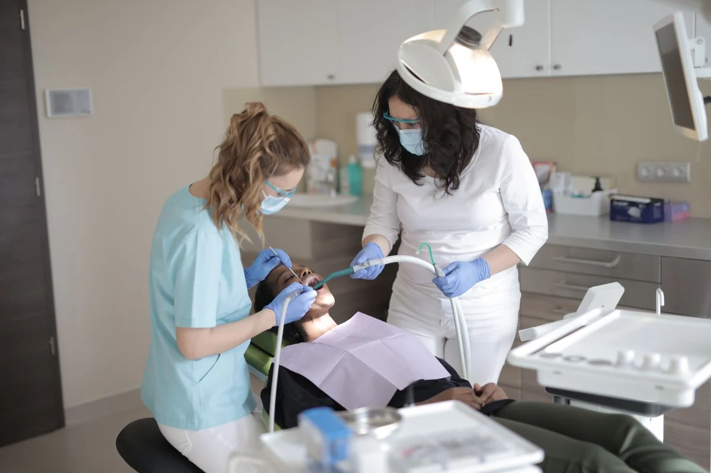
Lleva contigo las indicaciones de tu profesional y un plan claro de seguimiento. Nuestro contenido de cuidados te ayuda a preparar la siguiente conversación sobre hábitos, controles y prevención.
Explora nuestra guía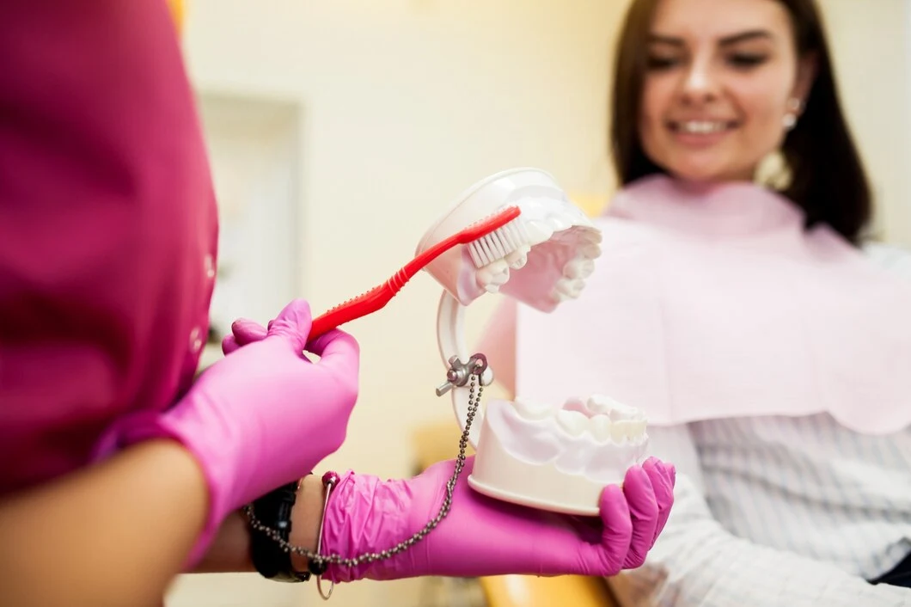
Desde la primera revisión infantil hasta el cuidado dental en la adultez. Conoce nuestras especialidades y encuentra un punto de partida para ti y tu familia.
Explora los tratamientos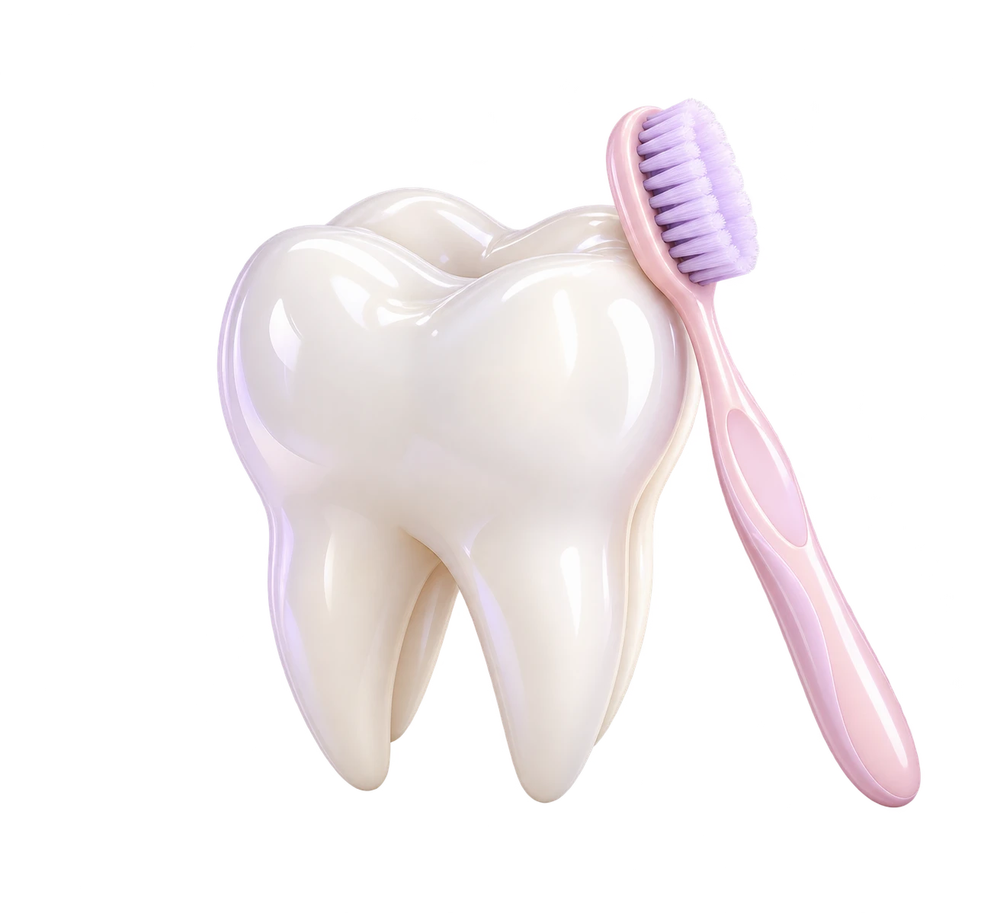

Fotografías de referencia para la propuesta Nident.
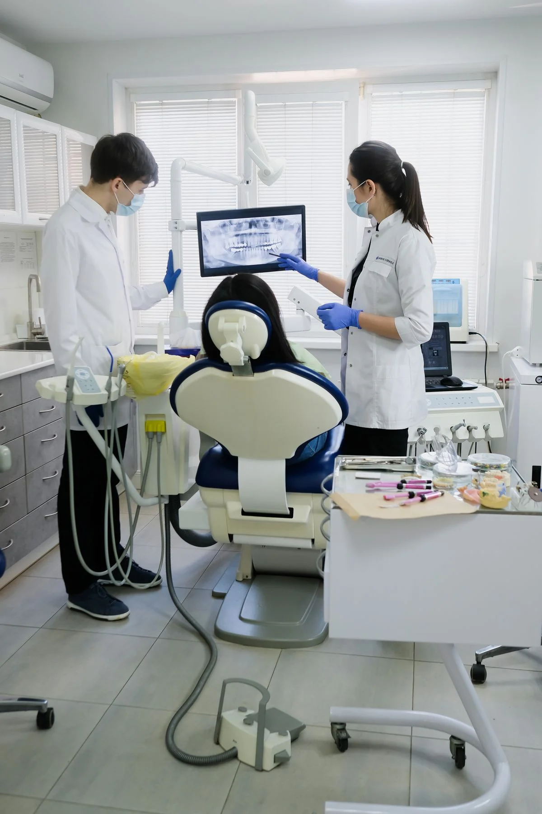
Desde la recepción hasta la consulta, la propuesta busca claridad, calma y tiempo para escucharte.
Elige tu sedeConoce las opciones, qué incluyen y qué preguntas puedes hacer antes de comenzar.
Cuéntanos tus experiencias previas y qué te ayudaría a sentirte más cómoda.
Un espacio sensible a las necesidades de niños, adultos y personas mayores.
En Nident Kids hablamos su idioma. Acompañamos a niños, niñas y familias con paciencia y explicaciones sencillas.
Elige dónde te gustaría atenderte. Las direcciones exactas y la disponibilidad real se incorporarán antes de publicar.
Un espacio para el cuidado de tu familia.
Elegir esta sedeTu atención dental, en el centro de la ciudad.
Elegir esta sedeCuidado cercano para cada etapa de tu sonrisa.
Elegir esta sede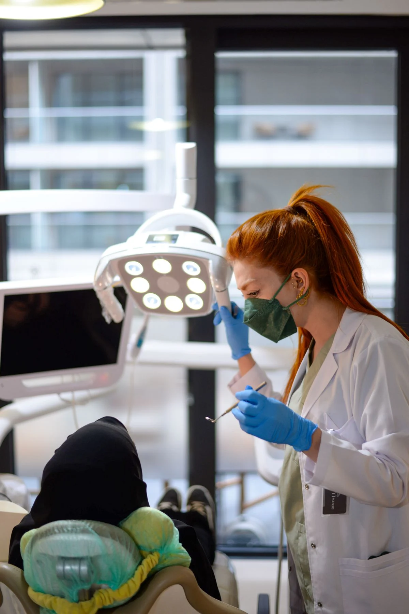
Organiza tu visita según tu rutina.
Elegir esta sedeFotografías de referencia. Consulta la dirección y el horario de atención antes de acudir.
Elige una de nuestras sedes de demostración.